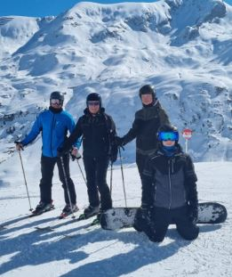

Milan Vandenbergh
Wintersport
Minstens één keer per jaar probeer ik me naar de bergen te begeven en mij uit te leven op het witte goud. Ik beoefen zowel het skiën als het snowboarden. Laat me niet kiezen, want dat is onmogelijk. Ik kreeg het skiën met de paplepel mee, want mijn ouders zijn ook fervente wintersporters. Elke winter gingen we naar dezelfde plek op vakantie, Serfaus in Oostenrijk. Dat dorp is dan ook een tweede thuis voor mij. hier zie je een foto van mij tijdens wintersport (deze keer op een snowboard).
